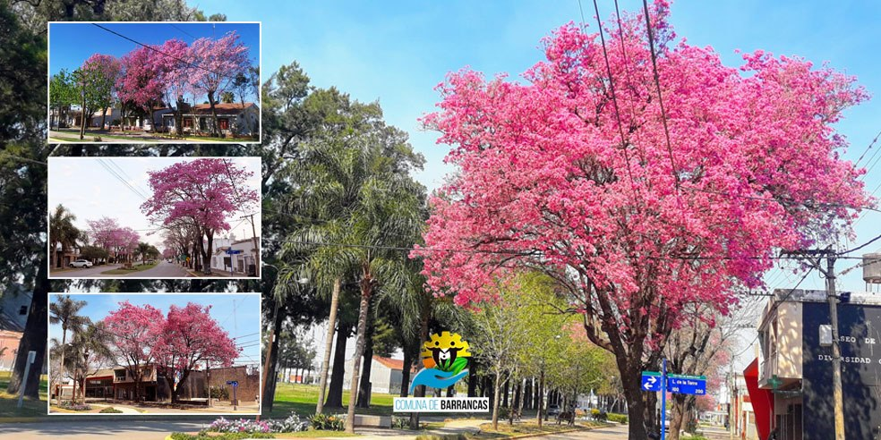
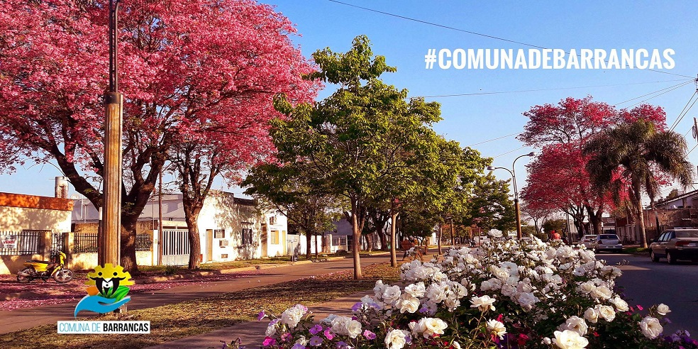

- 

- 
Es la obra social de los empleados públicos de la provincia de Santa Fe, que actualmente cuenta con más de 550.000 afiliados. Se crea a partir de la Ley 8.288/78 para organizar, administrar y financiar un sistema solidario de atención médica para sus beneficiarios. En esta sección se brinda información sobre los distintos servicios que IAPOS presta a sus afiliados como lugares de atención, cobertura en medicamentos, bocas de expendio como así también información útil para profesionales prestadores de servicios de salud. Solicite asesoramiento o realice su trámite personalmente en la oficina ubicada en calle 9 de Julio de nuestra localidad. Horario de atención: Lunes a Viernes de 7.00 hs a 12.30 hs en el local comunal.OCULTAR
Requisitos para la obtención de las licencias de conducir: Edades mínimas y máximas de los solicitantes Para las clases A21, B1, B2, G1, G2 y F: ser mayor de 18 años. Para las clases A22 y A3: ser mayor de 21 años o menor de 21 años en tanto acredite 2 años de antigüedad en clase A21. Para las clases C, E1 y E2: ser mayor de 21 años y para la primera vez, poseer 1 año de antigüedad en clase inferior (Licencias de moto, no acreditan antigüedad). Para las clases D1 y D2: ser mayor de 21 años y para la primera vez, poseer 1 año de antigüedad en clase inferior. PASOS PARA TRAMITAR SU LICENCIA DE CONDUCIR: Solicitar turno en la oficina comunal. OCULTAR